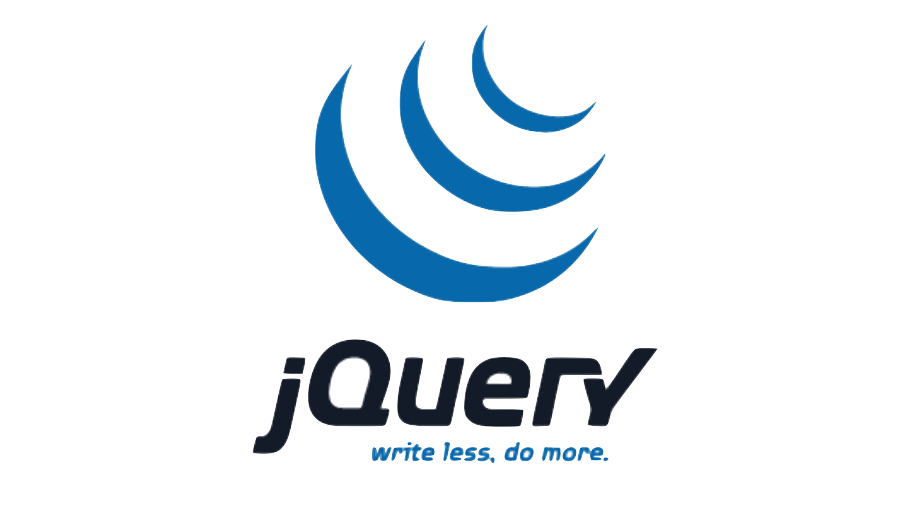
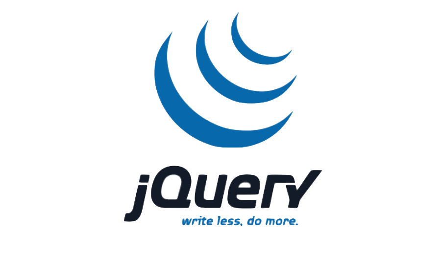
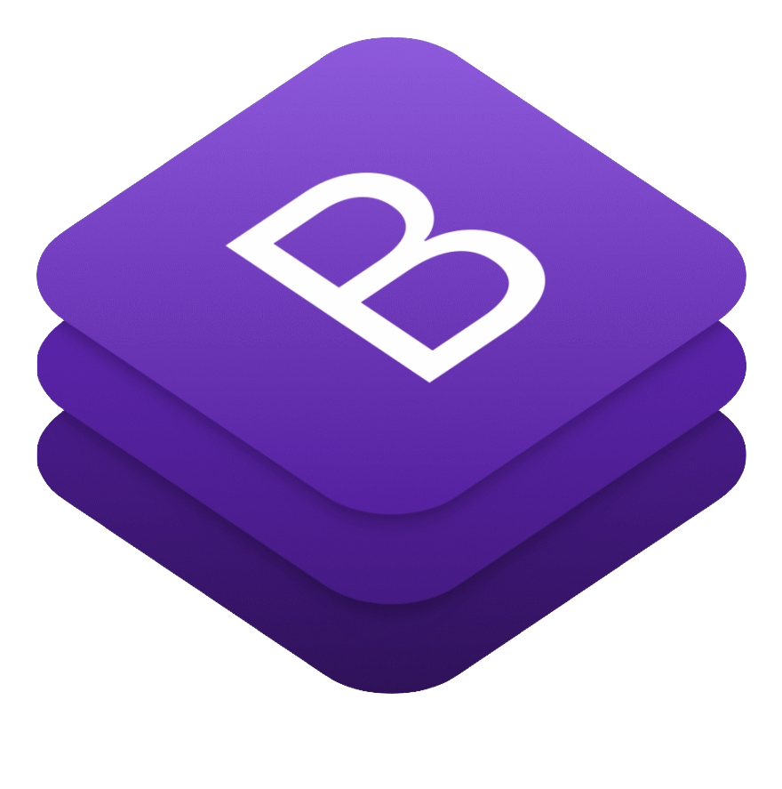
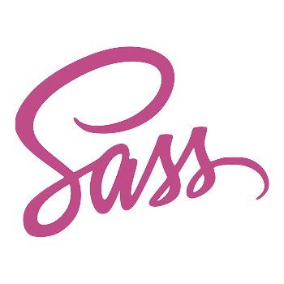
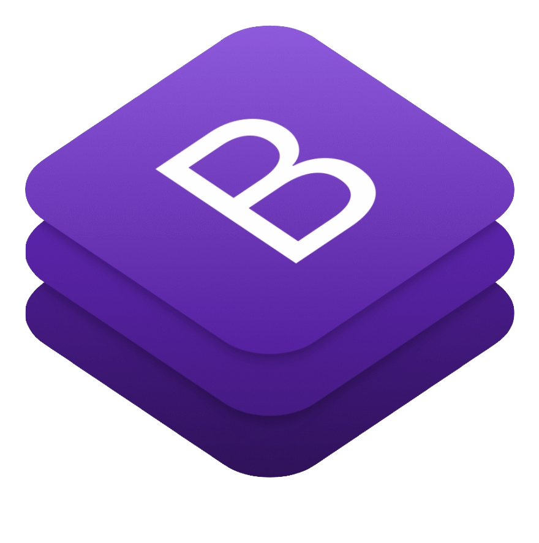
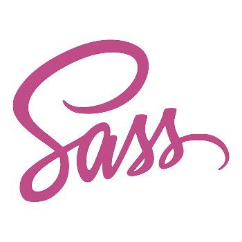

So, who am I?
As an analytical thinker who likes tackling difficult problems,
full-stack software development has become something that I greatly enjoy.
Although I first started learning programming languages in middle school, I became much more serious about coding in college after accounting
class threw me for a loop and I decided that finance was not the field for me. While I learned Java, Python, and SQL in my courses,
I also worked diligently to learn technologies such as Javascript and the command line on my own.
This eventually led to a Fortune 500 summer internship in software development and a second fall internship which
I am presently working in.
In May 2021, I will complete my bachelor’s degree in Computer Information Systems with a minor in Chinese.
In addition to my technical skills, I also have advanced proficiency in Mandarin
Chinese and intermediate proficiency in Brazilian Portuguese.
 

 


